Problems tagged with "feature maps"
Problem #108
Tags: quiz-05, lecture-09, feature maps
Suppose you are given the following basis functions that define a feature map \(\vec\phi: \mathbb{R}^3 \to\mathbb{R}^4\):
What is the representation of the data point \(\vec{x} = (3, 2, -1)\) in the new feature space?
Solution
\((6, 4, 3, -6)\).
We compute each basis function at \(\vec{x} = (3, 2, -1)\):
So \(\vec\phi(\vec{x}) = (6, 4, 3, -6)\).
Problem #109
Tags: quiz-05, lecture-09, feature maps
Suppose you are given the following basis functions that define a feature map \(\vec\phi: \mathbb{R}^3 \to\mathbb{R}^4\):
What is the representation of the data point \(\vec{x} = (2, -1, 3)\) in the new feature space?
Solution
\((4, -3, 6, 3)\).
We compute each basis function at \(\vec{x} = (2, -1, 3)\):
So \(\vec\phi(\vec{x}) = (4, -3, 6, 3)\).
Problem #110
Tags: quiz-05, lecture-09, feature maps
Suppose you are given the following basis functions that define a feature map \(\vec\phi: \mathbb{R}^3 \to\mathbb{R}^4\):
What is the representation of the data point \(\vec{x} = (2, -3, 1)\) in the new feature space?
Solution
\((9, 2, -3, 4)\).
We compute each basis function at \(\vec{x} = (2, -3, 1)\):
So \(\vec\phi(\vec{x}) = (9, 2, -3, 4)\).
Problem #111
Tags: linear classifiers, quiz-05, lecture-09, feature maps
Suppose we have a feature map \(\varphi : \mathbb{R}^3 \to\mathbb{R}^4\) with the following basis functions:
A linear classifier in this feature space has learned the weight vector \(\vec{w} = (w_0, w_1, w_2, w_3, w_4) = (0.4,\; 0.3,\; -0.6,\; 1.3,\; 0.7)\), where \(w_0 = 0.4\) is the bias (intercept) term. The prediction function is:
What is the value of the prediction function \(H\) for the input point \(\vec{x} = (3, 2, -1)\) in the original \(\mathbb{R}^3\) space?
Solution
\(-0.5\).
First, we compute the feature representation of \(\vec{x} = (3, 2, -1)\):
So the feature vector is \(\varphi(\vec{x}) = (6, 4, 3, -6)\).
Then we compute the prediction function:
Problem #112
Tags: linear classifiers, quiz-05, lecture-09, feature maps
Suppose we have a feature map \(\varphi : \mathbb{R}^3 \to\mathbb{R}^4\) with the following basis functions:
A linear classifier in this feature space has learned the weight vector \(\vec{w} = (w_0, w_1, w_2, w_3, w_4) = (0.5,\; 0.25,\; -1,\; 0.5,\; -0.5)\), where \(w_0 = 0.5\) is the bias (intercept) term. The prediction function is:
What is the value of the prediction function \(H\) for the input point \(\vec{x} = (2, -1, 3)\) in the original \(\mathbb{R}^3\) space?
Solution
\(6\).
First, we compute the feature representation of \(\vec{x} = (2, -1, 3)\):
So the feature vector is \(\varphi(\vec{x}) = (4, -3, 6, 3)\).
Then we compute the prediction function:
Problem #113
Tags: linear classifiers, quiz-05, lecture-09, feature maps
Suppose we have a feature map \(\varphi : \mathbb{R}^3 \to\mathbb{R}^4\) with the following basis functions:
A linear classifier in this feature space has learned the weight vector \(\vec{w} = (w_0, w_1, w_2, w_3, w_4) = (2,\; -1,\; 3,\; 0.5,\; -2)\), where \(w_0 = 2\) is the bias (intercept) term. The prediction function is:
What is the value of the prediction function \(H\) for the input point \(\vec{x} = (1, -3, 2)\) in the original \(\mathbb{R}^3\) space?
Solution
\(-4.5\).
First, we compute the feature representation of \(\vec{x} = (1, -3, 2)\):
So the feature vector is \(\varphi(\vec{x}) = (4, 2, 3, 5)\).
Then we compute the prediction function:
Problem #114
Tags: linear classifiers, quiz-05, lecture-09, feature maps
Consider the following data in \(\mathbb{R}\):
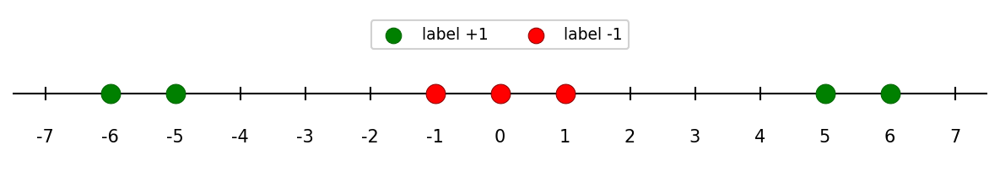
Note that this data is not linearly separable in \(\mathbb{R}\). For each of the following transformations that map the data into \(\mathbb{R}^2\), determine whether the transformed data is linearly separable.
Part 1)
True or False: The transformation \(x \mapsto(x, x^3)\) makes the data linearly separable in \(\mathbb{R}^2\).
Solution
False.
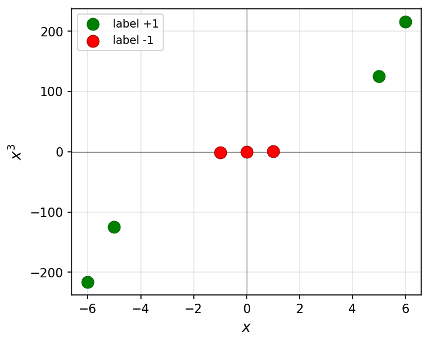
Since \(x^3\) is a monotonically increasing function, the relative order of the points along the curve \(y = x^3\) is the same as in 1D. The classes remain interleaved and cannot be separated by a line.
Part 2)
True or False: The transformation \(x \mapsto(x, x^2)\) makes the data linearly separable in \(\mathbb{R}^2\).
Solution
True.
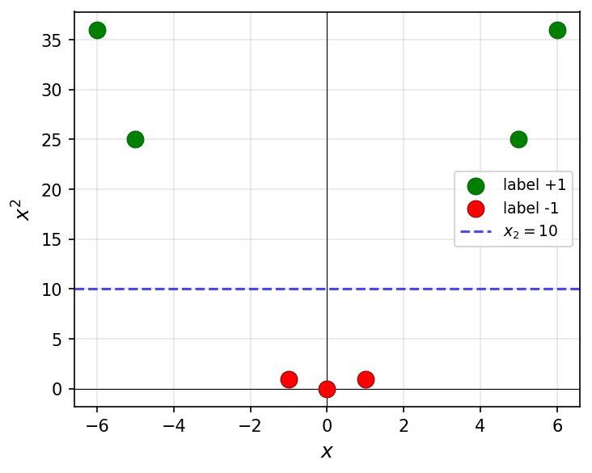
The green points have large \(x^2\) values (\(25\) and \(36\)) while the red points have small \(x^2\) values (\(0\) and \(1\)). A horizontal line such as \(x_2 = 10\) separates them.
Part 3)
True or False: The transformation \(x \mapsto(x, |x|)\) makes the data linearly separable in \(\mathbb{R}^2\).
Solution
True.
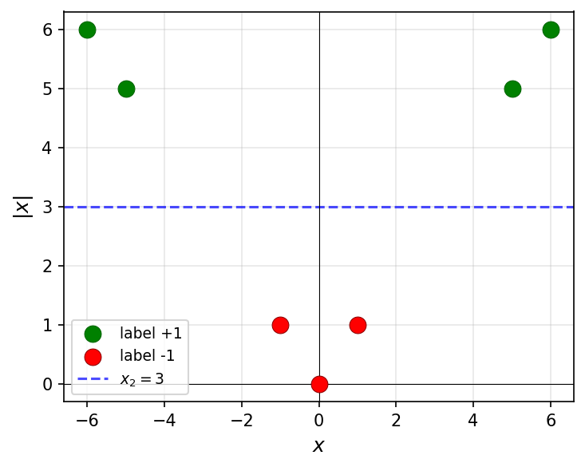
The green points have large \(|x|\) values (\(5\) and \(6\)) while the red points have small \(|x|\) values (\(0\) and \(1\)). A horizontal line such as \(x_2 = 3\) separates them.
Part 4)
True or False: The transformation \(x \mapsto(x, x)\) makes the data linearly separable in \(\mathbb{R}^2\).
Solution
False.
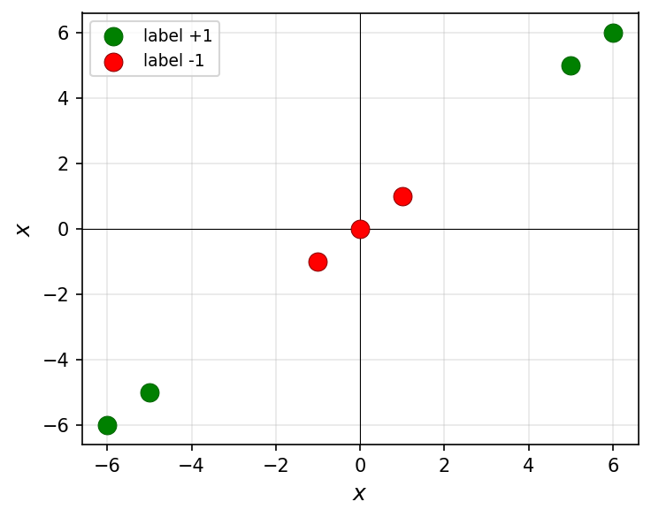
This transformation maps every point to the line \(y = x\) in \(\mathbb{R}^2\). The data is effectively still one-dimensional, and the classes remain interleaved along this line.
Problem #115
Tags: linear classifiers, quiz-05, lecture-09, feature maps
Consider the data shown below:
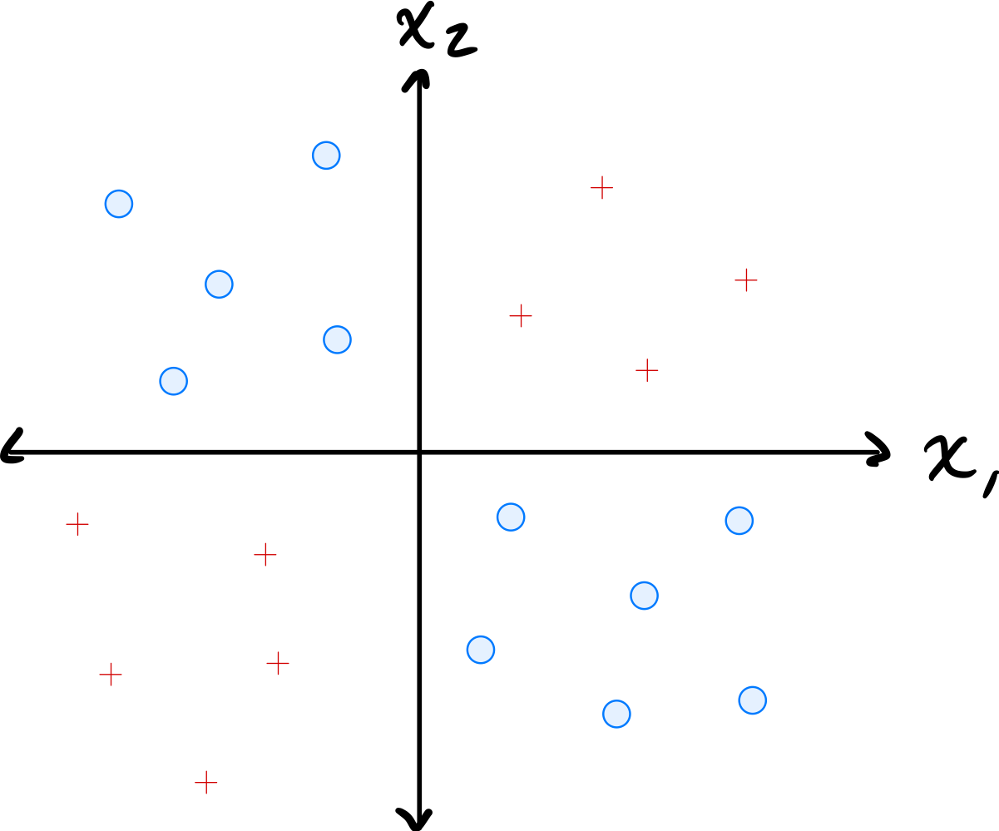
The data comes from two classes: \(\circ\) and \(+\).
Suppose a single basis function will be used to map the data to feature space where a linear classifier will be trained. Which of the below is the best choice of basis function?
Solution
\(\varphi(x_1, x_2) = x_1 \cdot x_2\).
The data has \(\circ\) points in quadrants where \(x_1\) and \(x_2\) have the same sign (so \(x_1 x_2 > 0\)) and \(+\) points where they have opposite signs (so \(x_1 x_2 < 0\)). The product \(x_1 \cdot x_2\) captures this separation, allowing a linear classifier in the 1D feature space to distinguish the classes.
Problem #116
Tags: linear classifiers, quiz-05, lecture-09, feature maps
Define the "triangle" basis function:
Three triangle basis functions \(\phi_1\), \(\phi_2\), \(\phi_3\) have centers \(c_1 = 1\), \(c_2 = 4\), and \(c_3 = 5\), respectively. These basis functions map data from \(\mathbb{R}\) to feature space \(\mathbb{R}^3\) via \(x \mapsto(\phi_1(x), \phi_2(x), \phi_3(x))^T\).
A linear predictor in feature space has equation:
Part 1)
What is the representation of \(x = 4.5\) in feature space?
Solution
\((0, 1/2, 1/2)^T\).
We evaluate each basis function at \(x = 4.5\):
Therefore, the feature space representation is \((0, 1/2, 1/2)^T\).
Part 2)
What is \(H(4.5)\) in the original space?
Solution
\(1\).
Using the feature space representation from part (a):
Part 3)
Plot \(H(x)\)(the prediction function in the original space) from 0 to 8 on the grid below.

Solution
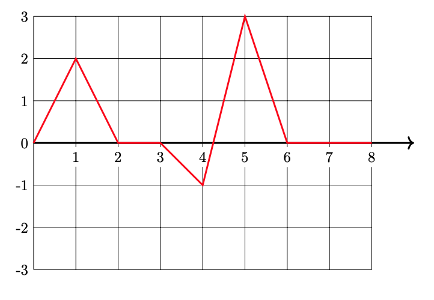
Problem #117
Tags: linear classifiers, quiz-05, lecture-09, feature maps
Consider the data shown below:
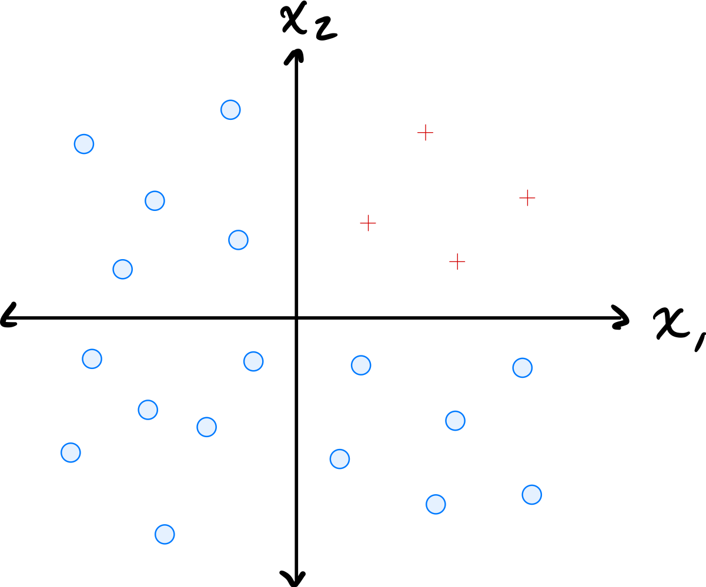
The data comes from two classes: \(\circ\) and \(+\).
Suppose a single basis function will be used to map the data to feature space where a linear classifier will be trained. Which of the below is the best choice of basis function?
Solution
\(\varphi(x_1, x_2) = \min\{x_1, x_2\}\).
The data has \(\circ\) points where both coordinates are large and \(+\) points where at least one coordinate is small. The minimum of the two coordinates captures this: \(\circ\) points have a large minimum while \(+\) points have a small minimum. This allows a linear classifier in the 1D feature space to separate the classes.
Problem #118
Tags: linear classifiers, quiz-05, lecture-09, feature maps
Define the "box" basis function:
Three box basis functions \(\phi_1\), \(\phi_2\), \(\phi_3\) have centers \(c_1 = 1\), \(c_2 = 2\), and \(c_3 = 6\), respectively. These basis functions map data from \(\mathbb{R}\) to feature space \(\mathbb{R}^3\) via \(x \mapsto(\phi_1(x), \phi_2(x), \phi_3(x))^T\).
A linear predictor in feature space has equation:
Part 1)
What is the representation of \(x = 1.5\) in feature space?
Solution
\((1, 1, 0)^T\).
We evaluate each basis function at \(x = 1.5\):
Therefore, the feature space representation is \((1, 1, 0)^T\).
Part 2)
What is \(H(2.5)\)?
Solution
\(-1\).
First, we find the feature space representation of \(x = 2.5\):
Then:
Part 3)
Plot \(H(x)\)(the prediction function in the original space) from 0 to 8 on the grid below.
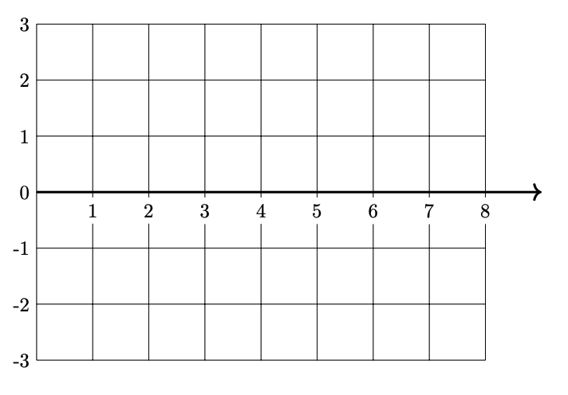
Solution
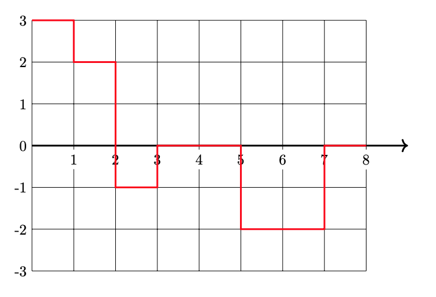
Problem #120
Tags: lecture-10, quiz-05, RBF networks, feature maps
Let \(\mathcal{X} = \{(\vec{x}^{(1)}, y_1), \ldots, (\vec{x}^{(100)}, y_{100})\}\) be a dataset of 100 points, where each feature vector \(\vec{x}^{(i)}\in\mathbb{R}^{50}\). Suppose a Gaussian RBF network is trained using 25 Gaussian basis functions.
Recall that a Gaussian RBF network can be viewed as mapping the data to feature space, where a linear prediction rule is trained. In the above scenario, what is the dimensionality of this feature space?
Solution
\(25\).
Each Gaussian basis function produces one feature (the output of that basis function applied to the input). With 25 basis functions, the feature space is \(\mathbb{R}^{25}\). The dimensionality of the feature space equals the number of basis functions, not the original input dimension.
Problem #123
Tags: lecture-10, quiz-05, RBF networks, feature maps
Consider a Gaussian RBF network with three basis functions of the form \(\varphi_i(\vec x) = e^{-\|\vec x - \vec \mu^{(i)}\|^2 / \sigma^2}\), where \(\sigma = 2\) for all basis functions. The centers \(\vec\mu^{(1)}\), \(\vec\mu^{(2)}\), and \(\vec\mu^{(3)}\) are shown as black \(\times\) markers in the figure below.
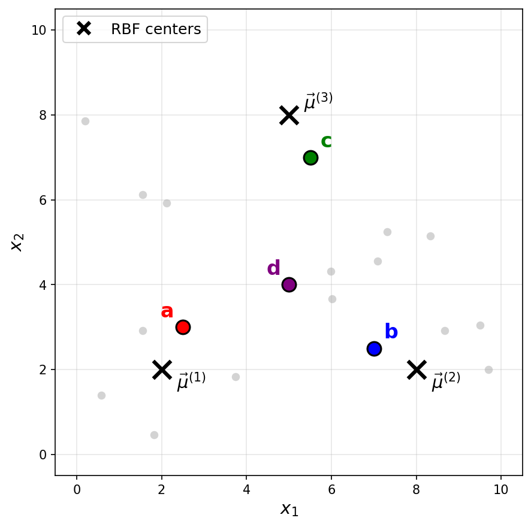
Recall that a Gaussian RBF network can be viewed as mapping data points to a feature space, where the new representation of a point \(\vec x\) is:
Suppose a point \(\vec x\) has the following feature representation:
Which of the labeled points (a, b, c, or d) could be \(\vec x\)?
Solution
The answer is c.
The feature representation tells us that \(\varphi_1(\vec x) \approx 0\), \(\varphi_2(\vec x) \approx 0\), and \(\varphi_3(\vec x) \approx 0.73\).
Since a Gaussian basis function \(\varphi_i(\vec x) = e^{-\|\vec x - \vec \mu^{(i)}\|^2 / \sigma^2}\) outputs values close to 1 when \(\vec x\) is near the center \(\vec\mu^{(i)}\) and values close to 0 when \(\vec x\) is far from the center, the feature representation indicates that \(\vec x\) is far from \(\vec\mu^{(1)}\) and \(\vec\mu^{(2)}\)(since \(\varphi_1 \approx 0\) and \(\varphi_2 \approx 0\)), but relatively close to \(\vec\mu^{(3)}\)(since \(\varphi_3 \approx 0.73\)).
Looking at the figure, point c is the only point that is close to \(\vec\mu^{(3)}\) and far from both \(\vec\mu^{(1)}\) and \(\vec\mu^{(2)}\).
Problem #124
Tags: lecture-10, quiz-05, RBF networks, feature maps
Consider a Gaussian RBF network with three basis functions of the form \(\varphi_i(\vec x) = e^{-\|\vec x - \vec \mu^{(i)}\|^2 / \sigma^2}\), where \(\sigma = 3\) for all basis functions. The centers \(\vec\mu^{(1)}\), \(\vec\mu^{(2)}\), and \(\vec\mu^{(3)}\) are shown as black \(\times\) markers in the figure below.
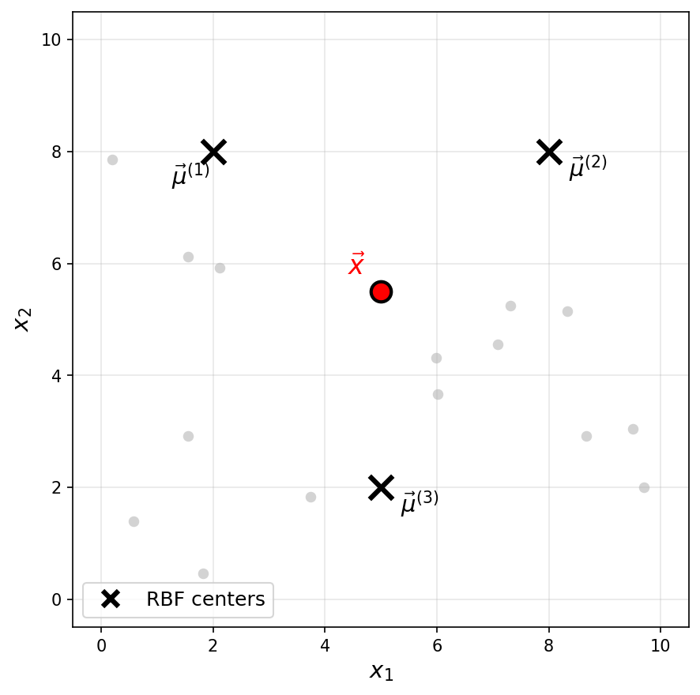
Recall that a Gaussian RBF network can be viewed as mapping data points to a feature space, where the new representation of a point \(\vec x\) is:
One of the following is the feature representation of the highlighted point \(\vec x\). Which one?
Solution
The answer is \(\vec f(\vec x) \approx(0.18, 0.18, 0.26)^T\).
The highlighted point \(\vec x\) is not particularly close to any of the three centers. It is roughly equidistant from \(\vec\mu^{(1)}\) and \(\vec\mu^{(2)}\), and slightly closer to \(\vec\mu^{(3)}\).
Since a Gaussian basis function outputs values close to 1 only when the input is very near the center and decays toward 0 as the distance increases, we expect all three basis functions to output moderate, nonzero values. This rules out the first three options, which each have one large value and two zeros (corresponding to a point very close to a single center).